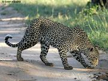

Baby Cottage
Nisargadama

Nisargadham (as it is popularly known as) is an Ecological Park for young and old and a paradise for the nature lovers. This romantic 64-acre island, accessible through a hanging bridge. It gives immense pleasure to all the Nature and Fun loving tourists to wander around the park. Honeymooners (or anybody!!!) can enjoy boating and spend some time together away from the crowd. If you are looking for some extra large fun, then the elephant back ride is deemed perfect.
Having local food surrounded by tweeting birds and whispering nature in a Restaurant made from bamboo is definitely bliss! It also has a forest department run guest house and treetop bamboo cottages. A wide variety of wild animals can be found here including dears, peococks and rabbits that comes handy. There is also a children's playground and orchidarium
How to reach Nisargadhama/Nisargadama:Location: Gudde hosur
Distance: 30 Kms from Madikeri, 4 Kms from Kushalnagar & 95 Kms from Mysore.
Nagarahole
Nagarhole National Park is also known as 'Rajiv Gandhi National Park. The word 'Nagarahole(y)' means 'Cobra-river' (Nagara=Cobra snake; Holey=River) in Kannada. It is spread between Kodagu and Mysore districts. Nagarahole river flows through the park and gradually joins the Kabini river which also is a boundary between Nagarahole and Bandipur.
The exclusive hunting reserve of the former rulers of Mysore, the park has rich forest cover, small streams, valleys, and waterfalls. Variety of Birds, animals and reptiles can be found here. It streches over 640 km², protecting the wildlife of Karnataka. Together with the adjoining Bandipur National Park (870 km²) and Mudumalai National Park (320 km²), it forms the largest protected area in southern India. Several streams in the Park, are tributaries of the two major rivers in the State, namely, Lakshmanathirtha and Kabini which in turn join the river Cauvery.
Forest department vehicles are available for wildlife viewing. The ideal time to visit the park is between September and May. The Forest Department, have their rest houses at Nagarahole. Wild animals found here include the Tiger, Leopard, Indian elephant, Indian bison or gaur, Wild dog, Sloth bear, Indian giant squirrel, Palm civet, Common otter, Four horned antelope, Mouse deer, Indian python, Indian cobra and many more. Variety of The bird life includes the Peacock, Grey jungle fowl, Alexandrine parakeet being some of them.
How to reach Nagarahole:Location: It is spread between Kodagu and Mysore districts.
Distance: 90 kms from Madikeri & 95 Kms from mysore
Dubare Forest
Dubare Forest is a natural island of about 11-12 acres. This is a fabulous pick nick place where you can enjoy singing to the karaoke of Mother Nature. Elephants are often found bathing in the river with mahouts helping them with the process. If you have a good smile and a good sense of humor you can get a free ride on the elephant!
This is mainly an elephant capturing and training camp of the Forest Department. Giants of the jungle are captured with the help of the local tribesman, The Kurubas, and few tamed or domestic elephants. Fishing is allowed but with the prior permission from the wild life society. The Forest Department maintains cottages/guest houses at Dubare forest. Activities here includes, bird watching, white river rafting, trekking, boating, fishing, camp fire and many more. Situated on the banks of River Cauvery, this place is an ideal holiday spot.
How to reach Dubare Forest:Location: Near Nanjarayapattana.
Distance: 40 Kms from Madikeri & 16 Kms from Kushalnagar
Chiklihole Reservoir
Pronounced as 'Chikli-holey', it is a large body of water that offers both relaxation and tranquillity; perfect for holidaymakers and nature lovers looking to escape the stresses of their lives back home.The area surrounding Chiklihole reservoir makes this place particularly attractive. Watching the Sunset from here is extremely picturesque and photogenic. The green meadow on one side and thick forest on the other makes this place a great travel destination across Coorg. The Chiklihole reservoir on the tributary of river Kaveri is also a wonderful picnic spot.
How to reach Chiklihole Reservoir:Location: Near Nanjarayapattana.
Distance: 45 Kms from Madikeri, 18 km's from Kushalnagar and 5 km's from Dubare forest
Coffee Estate/Plantation/Farm
The coffee plantation tour is ideal for anyone that wants to experience the culture while eyewitness the production of the freshly brewed coffee they will have in the mountains. Also for those who wishes to see Coorg outside the Metro and tourist area in a safe and enjoyable atmosphere. Hotel guests, whether they drink coffee or not, have an opportunity to see up-close Coorg's enchanting scenery in style. Visitors are accompanied by the Estate owners who also play the host. You can get the best knowledge on how coffee is grown and how it is sold. People of Coorg are famous for their hospitality. You can also taste typical Veg/Non-veg Coorg meals with prior arrangements with the estate owner. Accomodation and food is often provided within the Coffeefarm and is popularly known as Plantation-stays.
In addition, they will also be able to buy coffee at wholesale for themselves or as a gift. Fill their lungs with Coorg mountain air at approximately 2,500 - 5000feet. A tour of a century-old coffee plantations located on the hilly area provides the opportunity to enjoy coffee production, in a single, very scenic, tasty and aroma-filled experience. Finally, you will inhale from a cup with freshly brewed Coorg specialty coffee and drink it while being inside a plantation surrounded by the coffee workers.
Location: Most parts of Coorg (Prior permission required). Advised to consult proffesional tour guides, hotels or tourism info centre for locations.
Trekking and Hiking around Coorg
Visitors may select treks that suit their level of fitness, from easy one-hour or day rambles to highly challenging climbs. If you’re keen to enjoy Coorg’s beautiful landscapes and explore our vast wilderness areas, pack a selection of walking shoes and boots.
About 90 per cent of Coorg trekking spots are protected land with public access, so there are plenty of tracks and trails to choose from. You can find your own way, or take advantage of the many guided hikes and tours.Best season to plan your trekking is during December to May
TadiandamolTadiandamol is the highest mountain of Coorg district, and the second highest in Karnataka. Located on the Western Ghats range, and reaches an elevation of 1,748 mtrs (5,734 Ft) this place is special interest for trekkers. The mountain, covered with thick forest, is flooded with leeches.
This peak is situated near Virajpet about a 30kms away on the way to Napoklu, Bhagamandala and it lies adjacent to the Makutta forest. The peak is not altogether inaccessible; two-thirds of it can be negotiated on a jeep. On the way you can also have a glimpse of an old palace called 'Nalku Naadu Aramane'. All along the way trekkers experience grassy valleys, beech forests, high waterfalls, wildlife and amazing views. Most rewarding of all is the spectacular sight of distant cities or towns at the end.
Pushpagiri HillThe Pushpagiri or Subramanya hill (5,626 ft.), is in the north-west of Kodagu, about 36 kms from Somwarpet and 1.5 km from Kumaralli, which is amidst thick forest. This is a remarkable two-pointed hill of precipitous height and peculiar shape and resembles, as seen from Madikeri, a gigantic bullock hump.The lolcation of this mountain and its steep sturcture makes it more adventurous than Tadiandamol. Once you reach to its summit, stunning landscape and an breath taking view of Kodagu/Coorg, Dakshina Kannada, Mysore and Hassan can be seen.
Brahmagiri HillFrom the source of River Cauvery, Talacauvery, you can Trek/hike towards the peak of about 300 feet. Besides stunning mountain peaks, lush rainforests, rushing streams, immense waterfalls, superb beech forests and wild coasts, trekkers have opportunities to see rare forest flowers, ancient trees and strange insects passing by.Hiking trips allow you to visit more remote and unspoiled parts of Coorg and to see the landscape and culture with very little outside influence.
Honnamana KereHonnamana Kere is a hotspot for Trekking & Rock Climbing. Adjecent Cliffs (Gavi betta and Mori betta) are the favourite places adventure lovers. If you prefere to be relaxed you can take a Hike in the Coffee plantations.